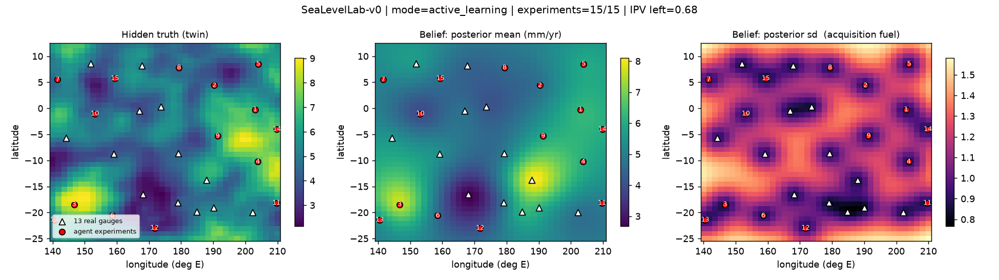

From 13 tide gauges to a clickable probability map
What the data is, which models do the work, why a spatial statistics model and a Bayesian-optimisation surrogate turn out to be the same object, and what the result cannot tell you.
The pipeline in one picture
The left half is a classical spatial-statistics analysis. The right half is what that analysis becomes once you notice that its latent field and a Bayesian-optimisation surrogate are the same mathematical object. Steps 1–3 build the left half, steps 4–5 the top right, step 6 the bottom right.
The data, and the trap inside it
Why first: the trap decides which quantity the whole project is allowed to model.
Monthly sea-level statistics from the Australian Bureau of Meteorology's Pacific Sea Level and Geodetic Monitoring Project: 13 tide gauges, monthly records from 1992 to 2025, 4 576 station-months after cleaning. Each row carries the month's mean, standard deviation, minimum and maximum.
The trap is that every level is measured against that gauge's own benchmark. Fiji reads 2.37 m and Marshall Islands reads 1.11 m, and the difference is where somebody bolted a datum plate, not oceanography. Modelling raw levels across stations would fit that bolt.
So the comparable physical quantity is the rise rate: per station, fit Mean ~ trend + annual cycle and keep the trend in mm per year. Across the network it runs from 1.5 mm/yr at Vanuatu to 9.8 mm/yr at Samoa — Samoa is high because of post-2009 earthquake subsidence, which is land moving down rather than water moving up, and the model is not asked to distinguish the two.
Year = 239890 row, string-typed numerics, and duplicated station-months. These seams are stated, not smoothed over.The classical model: an R-INLA SPDE field
Why: it produces the uncertainty map that every later decision reads.
Monthly mean sea level is fitted with a latent Gaussian field using the stochastic partial differential equation approach in R-INLA: a triangulated mesh over the study box, a Matérn field with alpha = 2 (smoothness ν = 1 in two dimensions), a Gaussian likelihood, and the month's standard deviation as a covariate. Inference uses int.strategy = "eb", empirical Bayes.
The field is then projected onto a regular grid, which turns a mesh of triangles into two surfaces you can actually read: the posterior mean and the posterior standard deviation. The second one matters more than the first. It says where the model does not know, and every acquisition function in step 5 is a different way of asking that same map a question.
The bridge: the SPDE field is a Bayesian-optimisation surrogate
Why this is the centre of the project: it is what lets a classical analysis become a decision loop without inventing a second model.
Lindgren, Rue & Lindström (2011) showed that the SPDE (κ² − Δ)^(α/2)(τu) = W has a Gaussian-process solution with a Matérn covariance and practical range ρ = √(8ν)/κ. Three correspondences follow, and all three are visible in the code rather than asserted in prose:
alpha = 2in R-INLA is a Matérn kernel with ν = 1 — the same kernel family BoTorch puts inside a surrogate.- INLA's
int.strategy = "eb"is type-II maximum likelihood, which is exactly whatfit_gpytorch_mllperforms. - The posterior-sd map that the classical analysis plots is the quantity that UCB, expected improvement and integrated-variance acquisitions consume.
To make the equivalence checkable, the Gaussian process is also written from scratch in about forty lines of R — Matérn 3/2 covariance, Cholesky solve, log marginal likelihood, type-II MAP fit — and its fitted range and scale are printed side by side with INLA's.
The digital twin and a Gymnasium environment
Why: a self-driving lab needs a simulator before it is allowed near hardware.
A tide-gauge network is a laboratory whose experiments are expensive — deploying a gauge, or running a survey campaign at a location. The twin draws a hidden truth from the GP posterior, so it honours all 13 real gauges but has unknown structure between them. The environment follows the Gymnasium contract, reset() and step(action), and exists in both R (an R6 class) and Python.
| MDP element | Definition |
|---|---|
| hidden state | the true rise-rate field, mm/yr |
| state (belief) | GP posterior mean and sd on the grid, plus budget left — a sufficient statistic of the history, which turns the POMDP into a belief-MDP |
| action | a location in the study box: where to run the next experiment |
| reward, active learning | integrated posterior variance removed, normalised — the A-optimal design criterion, minus a cost per experiment |
| reward, optimisation | improvement of the best measured rate, in units of the field scale |
| transition | run the experiment, then Bayes' rule on the GP |
Only one function in the whole stack touches the instrument: measure(x). Everything else — acquisitions, policies, the language model in step 5 — reaches the hardware through env.step() and nowhere else.
Closing the loop, and what the benchmark actually says
Why: this is the part that is easy to fake and easy to check.
Each iteration is: current belief → acquisition over the candidate grid → argmax → step() → Bayesian update. For active learning the acquisition is the closed-form drop in integrated posterior variance from adding one point; for optimisation it is noisy expected improvement. Every agent sees the same hidden truths and the same measurement noise, with a budget of 15 experiments over 6 episodes.
Active learning — fraction of the prior map variance still remaining after 15 experiments, lower is better:
| agent | IPV remaining | best measured, mm/yr |
|---|---|---|
| Random | 0.815 ± 0.045 | 6.84 |
| SB3-PPO | 0.957 ± 0.000 | 5.64 |
| BoTorch | 0.682 ± 0.002 | 8.18 |
Optimisation — simple regret against the twin's true maximum, mm/yr, lower is better:
| agent | simple regret | best measured, mm/yr |
|---|---|---|
| Random | 2.456 ± 1.741 | 6.84 |
| Optuna-GP | 2.294 ± 0.620 | 7.01 |
| SB3-PPO | 3.984 ± 0.438 | 5.93 |
| BoTorch | 1.719 ± 0.483 | 7.32 |
The closed loop removes 32 % of the map uncertainty where random experimentation removes 18 %, and its spread across hidden truths is four times smaller — the consistency matters more than the mean when each experiment is a field campaign.
On top of the loop sits an agentic layer: a language model reads compact JSON statistics of the belief and calls the lab through an audited toolbox — describe_lab, run_experiment, run_bo_campaign, surrogate_hyperparameters, final_report — in a ReAct loop. Its stopping rule is information gain per experiment, not a fixed schedule. It runs offline against a mock and live against any OpenAI-compatible endpoint.

The risk model behind the map
Why separate from step 5: the loop optimises where to learn; this is the quantity a person actually wants to read off a map.
Rise rate is the right target for the lab but the wrong number for a reader. What a reader wants is: how often does the old extreme happen now? So the map models annual extremes directly.
- Per station, take the annual maximum of the recorded monthly maximum, de-trended to a year-2000 baseline using that station's own rise rate.
- Fit a generalised extreme value distribution to all 13 stations jointly by maximum likelihood — 27 parameters: one shape shared across the network, plus a location and a scale per station. Sharing the shape is the statistically honest move with roughly 32 annual maxima per station. The fitted shape is ξ = −0.024, essentially Gumbel, which is what bounded tidal extremes should look like.
- The station location parameter is never interpolated across space: it carries the datum offset from step 1. Only the rise rate β(x) and the log GEV scale are carried across the map, by the same Gaussian process from step 3.
The probability that a given year's maximum exceeds the level that had a 1-in-N chance around 2000 then has a closed form, with the trend entering as a dimensionless shift δ:
δ(x, Y) = β(x) · (Y − 2000) / σ(x) ← the trend measured in units of natural variability
P = 1 − exp( −[1 + ξ·(zN − δ)]−1/ξ )
Because P is monotone in β, the 90 % credible band comes from putting the 5 % and 95 % quantiles of the GP posterior for β through the same formula — no Monte Carlo, which is why the year slider can recompute the whole map in the browser without lag.
Per station, with each gauge's own fitted rate and scale, probability that the old 1-in-10-year level is exceeded:
| station | β, mm/yr | GEV scale σ, m | P in 2020 | P in 2035 | P in 2050 |
|---|---|---|---|---|---|
| SAMOA | 9.81 | 0.047 | 1.00 | 1.00 | 1.00 |
| TONGA | 7.23 | 0.084 | 0.46 | 0.89 | 1.00 |
| Federated States of Micronesia | 6.05 | 0.120 | 0.26 | 0.48 | 0.75 |
| Papua New Guinea | 5.73 | 0.084 | 0.35 | 0.70 | 0.96 |
| Solomon Islands | 5.65 | 0.081 | 0.36 | 0.72 | 0.97 |
| NIUE | 5.60 | 0.107 | 0.27 | 0.50 | 0.78 |
| NAURU | 5.12 | 0.087 | 0.30 | 0.58 | 0.88 |
| TUVALU | 4.44 | 0.068 | 0.34 | 0.67 | 0.95 |
| Cook Islands | 4.22 | 0.039 | 0.62 | 0.99 | 1.00 |
| Marshall Islands | 4.16 | 0.043 | 0.53 | 0.96 | 1.00 |
| FIJI | 4.02 | 0.065 | 0.32 | 0.62 | 0.91 |
| KIRIBATI | 3.52 | 0.061 | 0.30 | 0.57 | 0.87 |
| VANUATU | 1.55 | 0.052 | 0.18 | 0.27 | 0.38 |
What this cannot tell you
Why it is on the site rather than in a footnote: every one of these would otherwise be someone's first question.
- It is not a flood map. The project holds no digital elevation model and no absolute elevations. Every probability is relative to a gauge's own datum: the chance that the water passes a level that used to be rare there, not that any particular land is under it.
- The probabilities saturate, and that is the finding. Samoa's 9.8 mm/yr over fifty years is about 0.49 m, against a GEV scale of 0.047 m — a shift of roughly ten times the natural spread, so P goes to 1 and stays there. Sea-level rise overwhelming year-to-year variability is the physical result; it also means the informative part of the slider is roughly 2010–2040, or later years at longer return periods.
- Most of the map is prior, not data. 67 % of grid cells have a data-support score below 0.25, meaning the GP posterior there has largely reverted to the prior. The map fades those cells and the click panel says so rather than showing a confident number over empty ocean.
- The trend is extrapolated linearly. No acceleration term, no scenario forcing. A linear trend fitted to 1992–2025 is pushed forward; that is a modelling choice, not a projection of climate policy.
- Samoa's rate is partly land, not water. Post-2009 earthquake subsidence lowers the benchmark, and a tide gauge cannot separate that from rising water without independent geodesy.
Where to look next
The interactive map is the result. The engineering report has the five-phase write-up: math bridge, MDP design, agentic workflow, benchmark, pitch. The full analysis is the Quarto notebook with the INLA fit, the from-scratch GP, the twin and the animated belief map. The repository carries the R and Python code, the smoke tests and the CI.
Lindgren, Rue & Lindström (2011), JRSS-B · Zhang (2004), JASA · Balandat et al. (2020), NeurIPS · Letham et al. (2019), Bayesian Analysis · Yao et al. (2023), ICLR.